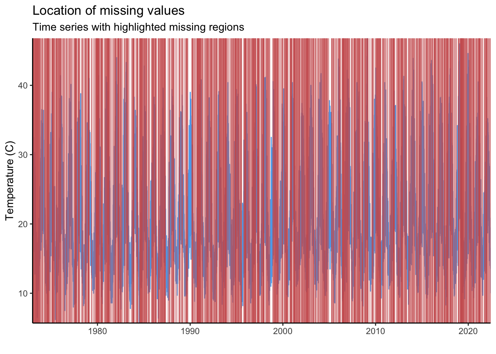
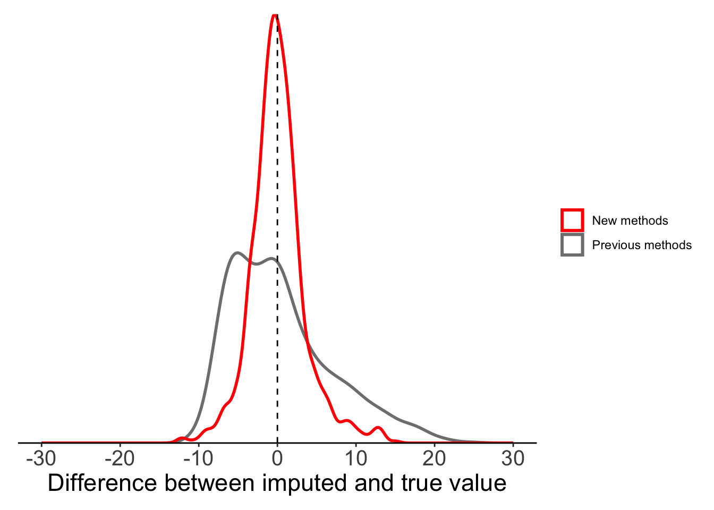

library(arrow) #To (quickly) read csv files
library(dplyr) #For data wrangling
library(tidyr) #Pivoting data
library(ggplot2) #For plotting
library(imputeTS) #To impute data in data pipelinesIntroduction
A common problem we encounter when analysing data is the presence of missing data, NAs. How do we deal with NAs when we encounter them? In many cases we have to accept that this information is missing; however, in time series where data are strongly auto-correlated we have a chance to estimate (of ‘impute’) these missing data using other data points where data were recorded. In this blog, I’ll look through different methods available in R that might be considered for imputing missing data in time series.
Preparing our workspace
Packages
Below are all the packages that we’ll use in this example. Most are the standard data science packages in R, but notice the inclusion of {imputeTS}, which is a tool specifically designed to deal with NAs in a time series.
Our example data
We’ll focus on a time series of temperature data from Melbourne, Australia (Source: Australian Bureau of Meteorology). This is actually a complete time series with no missing data, but we’ll generate 1000 NAs in the time series at random.
full_data <- arrow::read_csv_arrow(file = "data/melbourne_temp.csv") %>%
mutate(date = lubridate::ymd(paste(Year, Month, Day)),
maxT_missing = maxT)
#Generate some NAs in the data
#We ensure that the last row can't become NA so that linear interpolation is always possible
set.seed(1234) ## Set seed to make it repeatable
full_data$maxT_missing[sample(1:(nrow(full_data) - 1), size = 1000)] <- NAStep 1: Visualize the missing data
The first step to any analysis should be to inspect and visualize your data. Dealing with NAs is no different. If we know there are NAs in our time series we need to see when they occur and how often. {imputeTS} includes a number of in-built plotting functions to visualize NAs (e.g. ?imputeTS::ggplot_na_distribution) but here I’ve used {ggplot2} to make a set of custom plots.
First, we can look at which year the NAs occur in.
plot_data <- full_data %>%
group_by(Year) %>%
summarise(perc_NA = sum(is.na(maxT_missing))/n() * 100)
#The limit of the y-axis will be the nearest decile above the data
yaxis_lim <- (max(plot_data$perc_NA) %/% 10)*10 + 10
ggplot(data = plot_data) +
geom_col(aes(x = Year, y = perc_NA),
fill = "indianred", colour = "black",
linewidth = 0.25) +
scale_x_continuous(expand = c(0, 0)) +
scale_y_continuous(breaks = seq(0, 100, 5),
labels = paste0(seq(0, 100, 5), "%")) +
coord_cartesian(ylim = c(0, yaxis_lim)) +
labs(title = "Missing Values per Year",
subtitle = "Percentage of missing data in each year of the time-series",
x = "Year", y = "Percentage of records") +
theme_classic() +
theme(legend.title = element_blank(),panel.grid.major.y = element_line(colour = "grey75", linewidth = 0.25))
We can also look at the occurrence of NA values at the scale of days.
ggplot() +
geom_line(data = full_data, aes(x = date, y = maxT_missing), colour = "steelblue2") +
geom_vline(data = filter(full_data, is.na(maxT_missing)), aes(xintercept = date),
colour = "indianred", alpha = 0.5) +
scale_x_date(expand = c(0, 0)) +
scale_y_continuous(expand = c(0, 0)) +
labs(title = "Location of missing values",
subtitle = "Time series with highlighted missing regions",
y = "Temperature (C)",
x = "") +
theme_classic()
Each red line in the plot above is an NA in our time series. With 1000 NAs and a long time-series this is impossible to read. To visualise this more clearly, we can create the same graph but only for the year 2022.
full_data %>%
filter(Year == 2022) %>%
{ggplot() +
geom_line(data = ., aes(x = date, y = maxT_missing), colour = "steelblue2") +
geom_vline(data = filter(., is.na(maxT_missing)), aes(xintercept = date),
colour = "indianred", alpha = 0.5) +
scale_x_date(expand = c(0, 0)) +
scale_y_continuous(expand = c(0, 0)) +
labs(title = "Location of missing values",
subtitle = "Time series with highlighted missing regions",
y = "Temperature (C)",
x = "") +
theme_classic()}Warning: Removed 1 row containing missing values (`geom_line()`).
The inbuilt function ggplot_na_gapsize() from {imputeTS} is handy to see how often NAs occur consecutively. We can see that most NAs occur alone.
ggplot_na_gapsize(full_data$maxT_missing)
So we now know where the NAs are. This is important because it tells us if there is anything systematic about our missing data (e.g. do they all occur before a certain date? Do they occur in consecutive chunks?). Structure or patterns in missing data might be a sign of some underlying drivers of NAs that would need to be investigated further. In our case, the NAs are distributed randomly (we know this because we created them!). Now we need to work out what to do with them.
The basic method: Deletion
The most obvious solution when encountering NAs is to simply delete them. This method is perfectly appropraite in many cases, but it can raise 2 key issues:
Bias: If missing data are biased in some way, removing missing data will create bias in analyses. e.g. if temperature sensors tend to fail more at higher temperatures, removing NA values will bias our analysis towards lower temperatures.
Reduced statistical power: If we discard all records with any missing data, we may end up removing a lot of other useful information from covariates that were recorded at the same time (e.g. if we measured temperature and precipitation simultaneously). This will give us lower statistical power to answer our questions.
So, what is the alternative? Instead of deleting NAs from a time series, we will try and impute the missing values based on other points where data are available.
❌ Method 1: Global mean substitution ❌
The simplest approach that is sometimes proposed is to replace missing data with a global mean.
full_data <- full_data %>%
mutate(maxT_meansub = case_when(is.na(maxT_missing) ~ mean(maxT_missing, na.rm = TRUE),
TRUE ~ maxT_missing))Seems easy enough, but this raises a host of serious issues. Firstly, by replacing NAs with the global mean we artificially reduce the uncertainty when we try to estimate population statistics.
## The mean and SE of temperature from the real data
fullmean <- mean(full_data$maxT)
fullSE <- sd(full_data$maxT)/sqrt(nrow(full_data))
print(paste("Full sample: Mean: ", round(fullmean, 4), " SE:", round(fullSE, 4)))[1] "Full sample: Mean: 19.9204 SE: 0.0483"## The mean and SE of temperature data with global mean substitution
## SE is (incorrectly) reduced.
imputedmean <- mean(full_data$maxT_meansub)
imputedSE <- sd(full_data$maxT_meansub)/sqrt(nrow(full_data))
print(paste("With global mean substitution: Mean: ", round(imputedmean, 4), " SE:", round(imputedSE, 4)))[1] "With global mean substitution: Mean: 19.8958 SE: 0.0469"In the example above, we can see that the standard error of our temperature estimate is (incorrectly) reduced when we replace NAs with the global mean.
We will also create bias if we want to use our variable as a response in statistical analysis, like linear regression. We will tend to under-estimate the relationship between our predictor and response variable.
An extreme example:
## Create data with a known relationship between x and y
eg_lmdata <- tibble(x = 1:100) %>%
mutate(y = x*0.5 + rnorm(n = 100))
## Remove some data at random
eg_lmdata$y[sample(x = 1:nrow(eg_lmdata), size = 40)] <- NA
## Use global mean imputation
eg_lmdata <- eg_lmdata %>%
mutate(y_fill = case_when(is.na(y) ~ mean(y, na.rm = TRUE),
TRUE ~ y))
## Fit a model with the true data
lm(y ~ x, data = eg_lmdata) %>% summary()
Call:
lm(formula = y ~ x, data = eg_lmdata)
Residuals:
Min 1Q Median 3Q Max
-2.6492 -0.6466 0.1199 0.5332 2.5088
Coefficients:
Estimate Std. Error t value Pr(>|t|)
(Intercept) -0.366144 0.288255 -1.27 0.209
x 0.505625 0.005236 96.56 <2e-16 ***
---
Signif. codes: 0 '***' 0.001 '**' 0.01 '*' 0.05 '.' 0.1 ' ' 1
Residual standard error: 1.086 on 58 degrees of freedom
(40 observations deleted due to missingness)
Multiple R-squared: 0.9938, Adjusted R-squared: 0.9937
F-statistic: 9324 on 1 and 58 DF, p-value: < 2.2e-16## Fit a model with the data with NA replacement
lm(y_fill ~ x, data = eg_lmdata) %>% summary()
Call:
lm(formula = y_fill ~ x, data = eg_lmdata)
Residuals:
Min 1Q Median 3Q Max
-12.9176 -6.2557 0.4168 6.0790 13.2589
Coefficients:
Estimate Std. Error t value Pr(>|t|)
(Intercept) 10.77587 1.49423 7.212 1.17e-10 ***
x 0.26096 0.02569 10.159 < 2e-16 ***
---
Signif. codes: 0 '***' 0.001 '**' 0.01 '*' 0.05 '.' 0.1 ' ' 1
Residual standard error: 7.415 on 98 degrees of freedom
Multiple R-squared: 0.5129, Adjusted R-squared: 0.508
F-statistic: 103.2 on 1 and 98 DF, p-value: < 2.2e-16Although we know the relationship between x and y is 0.5, we heavily underestimate this when we replace NAs with the global mean.
We can see the problem with global mean substitution quite clearly if we compare the imputed values to the true values that we know are behind the NAs. In our temperature time series, we can see that global mean substitution tends to underestimate true temperature.
Show the code
filter(full_data, is.na(maxT_missing)) %>%
mutate(diff = maxT - maxT_meansub) %>%
{ggplot(.) +
geom_density(aes(x = diff), colour = "black", fill = "grey75") +
geom_vline(xintercept = 0, lty = 2) +
labs(x = "Difference between imputed and true value") +
scale_x_continuous(limits = c(-30, 30),
breaks = seq(-30, 30, 10)) +
scale_y_continuous(expand = c(0, 0)) +
theme_classic() +
theme(legend.title = element_blank(),legend.position = "none",
axis.text.y = element_blank(),
axis.title.y = element_blank(),
axis.ticks.y = element_blank(),
axis.line.y = element_blank(),
axis.text.x = element_text(size = 15),
axis.title.x = element_text(size = 17),
plot.margin = margin(10, 10, 10, 10))}Method 2: Local mean substitution
So, replacing every NA with a global mean is not acceptable. The next method we might consider is to estimate a local mean from the two nearest known values.
Local mean substitution can already be achieved with the approx() function in the base {stats} package; however, this does not work nicely if we want to code using pipes. As an alternative, we can use the na_interpolation() function from the package {imputeTS}, which has a wrapper around basic {stats} functions (e.g. approx(), spline()) as well as other more complex imputation functions from other packages that we’ll discuss below.
Here’s what this looks like:
# Use the imputeTS package
imputeTS::na_interpolation(x = c(1, NA, 5),
## We need to specify the 'f' argument at 0.5
## to weight each point equally.
method = "constant", f = 0.5)[1] 1 3 5
Note
Chunks of consecutive NAs are all given the same mean value.
imputeTS::na_interpolation(x = c(1, NA, NA, 5), method = "constant", f = 0.5)[1] 1 3 3 5
Note
Only the nearest values are considered.
imputeTS::na_interpolation(x = c(10, 1, NA, NA, 5, 1), method = "constant", f = 0.5)[1] 10 1 3 3 5 1We can then use this function within a call the mutate() to easily create a new imputed column.
### Replace missing values using
full_data <- full_data %>%
mutate(maxT_localmean = imputeTS::na_interpolation(x = maxT_missing, method = "constant", f = 0.5))If we compare this local mean substitution to our results from global mean substitution, we can see that things have greatly improved. The difference between our imputed values and true values appears to be evenly distributed around 0, suggesting that this method is not systematically over- or under-estimating.
Show the code
plot_data <- filter(full_data, is.na(maxT_missing)) %>%
mutate(globalmean = maxT - maxT_meansub,
localmean = maxT - maxT_localmean)
ggplot(plot_data) +
geom_density(aes(x = globalmean, colour = "Previous methods"),
fill = NA, linewidth = 1, alpha = 0.5) +
geom_density(aes(x = localmean, colour = "New methods"),
fill = NA, linewidth = 1, alpha = 0.5) +
geom_vline(xintercept = 0, lty = 2) +
labs(x = "Difference between imputed and true value") +
scale_x_continuous(limits = c(-30, 30),
breaks = seq(-30, 30, 10)) +
scale_y_continuous(expand = c(0, 0)) +
scale_colour_manual(values = c("red", "grey50")) +
theme_classic() +
theme(legend.title = element_blank(),axis.text.y = element_blank(),
axis.title.y = element_blank(),
axis.ticks.y = element_blank(),
axis.line.y = element_blank(),
axis.text.x = element_text(size = 15),
axis.title.x = element_text(size = 17),
plot.margin = margin(10, 10, 10, 10))
Method 3: Weighted moving average
By using the two closest points to impute a local mean we can substantial improveme upon the untenable method of global mean substitution; however, in many cases we can also gain information from other data points, not just the nearest neighbours. Of course, as we move further from the NA we will gain less and less information, so we can weight the information based on the distance from our missing data. This leads us to the weighted moving average method that we can employ with the na_ma() function from {imputeTS}.
na_ma() has two key arguments that you need to understand:
k: Size of the window over which to calculate the moving average. This is the number of time steps to either side of the NA that will be used.So, for an NA at position \(i\) and \(k = 2\), the weighted moving averaging would use observations at \(i-2\), \(i-1\), \(i+1\), and \(i+2\).weighting: The method used to weight data. This can include:simple: All values are equally weighted.linear: Weight decreases linearly with distance from \(i\). If \(x\) is the distance from \(i\), then the value has a weight \(1/(1 + x)\), such that the nearest values have weight of 1/2, 1/3, 1/4 etc.exponential: Weight decreases exponentially. If \(x\) is the distance from \(i\), then value has a weight \(1/2^x\) (default).
If k=1, we will get the same result as na_interpolation().
#Results are the same with each function.
imputeTS::na_ma(x = c(4, 3, 1, NA, 3, 4, 10), k = 1)[1] 4 3 1 2 3 4 10imputeTS::na_interpolation(x = c(4, 3, 1, NA, 3, 4, 10), option = "linear", method = "constant", f = 0.5)[1] 4 3 1 2 3 4 10If we expand the window (e.g. k=3), we include more information. Our result is no longer the same as using na_interpolation().
imputeTS::na_ma(x = c(4, 3, 1, NA, 3, 4, 10), k = 3, weighting = "simple")[1] 4.000000 3.000000 1.000000 4.166667 3.000000 4.000000 10.000000Using equal weights for all points is not ideal, so we can try using alternative weighting methods. In our simple example, using linear or exponential weighting minimizes the influence of large values further away from NA.
imputeTS::na_ma(x = c(4, 3, 1, NA, 3, 4, 10), k = 3, weighting = "linear")[1] 4.000000 3.000000 1.000000 3.615385 3.000000 4.000000 10.000000imputeTS::na_ma(x = c(4, 3, 1, NA, 3, 4, 10), k = 3, weighting = "exponential")[1] 4.000000 3.000000 1.000000 3.142857 3.000000 4.000000 10.000000
Note
Moving average will give different values to consecutive NAs.
imputeTS::na_ma(x = c(4, 3, 1, NA, NA, 3, 4, 10), k = 3, weighting = "simple")[1] 4.0 3.0 1.0 3.0 4.2 3.0 4.0 10.0To compare the benefit of different weighting methods we will use all three. For now, we just use default window size k = 4 (i.e. using 8 values in total towards mean).
full_data <- full_data %>%
mutate(maxT_mas = imputeTS::na_ma(x = maxT_missing, weighting = "simple"),
maxT_mal = imputeTS::na_ma(x = maxT_missing, weighting = "linear"),
maxT_mae = imputeTS::na_ma(x = maxT_missing, weighting = "exponential"))Now we can compare all our mean substitution methods: global, local, moving average (equal weight), moving average (linear weight), moving average (exponential weight). All methods, other than global mean, seem to perform reasonably well.
Show the code
plot_data <- filter(full_data, is.na(maxT_missing)) %>%
mutate(globalmean = maxT - maxT_meansub,
localmean = maxT - maxT_localmean,
movingavg_simple = maxT - maxT_mas,
movingavg_linear = maxT - maxT_mal,
movingavg_exp = maxT - maxT_mae)
ggplot(plot_data) +
geom_density(aes(x = globalmean, colour = "Previous methods"),
fill = NA, linewidth = 1, alpha = 0.5) +
geom_density(aes(x = localmean, colour = "Previous methods"),
fill = NA, linewidth = 1, alpha = 0.5) +
geom_density(aes(x = movingavg_simple, colour = "New methods"),
fill = NA, linewidth = 1, alpha = 0.5) +
geom_density(aes(x = movingavg_linear, colour = "New methods"),
fill = NA, linewidth = 1, alpha = 0.5) +
geom_density(aes(x = movingavg_exp, colour = "New methods"),
fill = NA, linewidth = 1, alpha = 0.5) +
geom_vline(xintercept = 0, lty = 2) +
labs(x = "Difference between imputed and true value") +
scale_x_continuous(limits = c(-30, 30),
breaks = seq(-30, 30, 10)) +
scale_colour_manual(values = c("red", "grey50")) +
scale_y_continuous(expand = c(0, 0)) +
theme_classic() +
theme(legend.title = element_blank(),
axis.text.y = element_blank(),
axis.title.y = element_blank(),
axis.ticks.y = element_blank(),
axis.line.y = element_blank(),
axis.text.x = element_text(size = 15),
axis.title.x = element_text(size = 17),
plot.margin = margin(10, 10, 10, 10))Method 4: Linear imputation
So far we’ve focussed on different forms of mean substitution, but there are still other methods that we might consider. Linear imputation is one of the more common alternatives. Like our basic local mean substitution, linear imputation uses information from the two nearest known points, but instead of taking the mean of these two points it imputes the missing value(s) assuming there is a linear trend in our variable over time.
To do this, we are going back to the na_interpolation() function, but this time we use the argument option=‘linear’. If we have a single NA value, linear imputation and local mean substitution will produce the same result.
# Assume a linear relationship of x over time,
imputeTS::na_interpolation(x = c(1, NA, 3), option = "linear")[1] 1 2 3# Take the mean of the two closest points
imputeTS::na_interpolation(x = c(1, NA, 3), method = "constant", f = 0.5)[1] 1 2 3Unlike local mean substitution, chunks of NAs are given different values.
## If there is more than one NA, it will impute from a single linear relationship fitted between the two nearest known values.
imputeTS::na_interpolation(x = c(1, NA, NA, 4), option = "linear")[1] 1 2 3 4We saw above that most of the NAs in our data are non-consecutive, so our linear imputation method will be very similar to local mean substitution in this case.
## Use linear imputation on our missing data
full_data <- full_data %>%
mutate(maxT_linearinterp = imputeTS::na_interpolation(x = maxT_missing, option = "linear"))Show the code
plot_data <- filter(full_data, is.na(maxT_missing)) %>%
mutate(globalmean = maxT - maxT_meansub,
localmean = maxT - maxT_localmean,
movingavg_simple = maxT - maxT_mas,
movingavg_linear = maxT - maxT_mal,
movingavg_exp = maxT - maxT_mae,
linearinterp = maxT - maxT_linearinterp)
ggplot(plot_data) +
geom_density(aes(x = globalmean, colour = "Previous methods"),
fill = NA, linewidth = 1, alpha = 0.5) +
geom_density(aes(x = localmean, colour = "Previous methods"),
fill = NA, linewidth = 1, alpha = 0.5) +
geom_density(aes(x = movingavg_simple, colour = "Previous methods"),
fill = NA, linewidth = 1, alpha = 0.5) +
geom_density(aes(x = movingavg_linear, colour = "Previous methods"),
fill = NA, linewidth = 1, alpha = 0.5) +
geom_density(aes(x = movingavg_exp, colour = "Previous methods"),
fill = NA, linewidth = 1, alpha = 0.5) +
geom_density(aes(x = linearinterp, colour = "New methods"),
fill = NA, linewidth = 1, alpha = 0.5) +
geom_vline(xintercept = 0, lty = 2) +
labs(x = "Difference between imputed and true value") +
scale_x_continuous(limits = c(-30, 30),
breaks = seq(-30, 30, 10)) +
scale_colour_manual(values = c("red", "grey50")) +
scale_y_continuous(expand = c(0, 0)) +
theme_classic() +
theme(legend.title = element_blank(),axis.text.y = element_blank(),
axis.title.y = element_blank(),
axis.ticks.y = element_blank(),
axis.line.y = element_blank(),
axis.text.x = element_text(size = 15),
axis.title.x = element_text(size = 17),
plot.margin = margin(10, 10, 10, 10))Method 5: Spline interpolation
If we want to relax the assumption of linear change over time, we can instead use spline interpolation. Spline interpolation, as the name suggests, imputes missing values by fitting a spline through nearby known points. Unlike linear interpolation, spline interpolation uses more data either side of missing value, making it potentially more powerful.
To achieve spline interpolation we still use the na_interpolation() function, but now specify option = “spline” instead of “linear”.
# Fit spline through known data to estimate NA
imputeTS::na_interpolation(x = c(3, 2.5, 2, 1, NA, 0.75, 0, -0.5, -1), option = "spline")[1] 3.0000000 2.5000000 2.0000000 1.0000000 0.8142007 0.7500000 0.0000000
[8] -0.5000000 -1.0000000There are a range of different spline functions that might have different success. We can pick the spline method used with the ‘method’ argument. There are 5 types of splines available. We can see the different spline fits below.
#Demonstrate how it works
test_df <- tibble(x = 1:9,
y = c(3, 2.5, 2, 1, NA, 0.75, 0, -0.5, -1))
fmm_func <- splinefun(x = test_df$y, method = "fmm")
periodic_func <- splinefun(x = test_df$y, method = "periodic")Warning in splinefun(x = test_df$y, method = "periodic"): spline: first and
last y values differ - using y[1L] for bothnatural_func <- splinefun(x = test_df$y, method = "natural")
monoH.FC_func <- splinefun(x = test_df$y, method = "monoH.FC")
hyman_func <- splinefun(x = test_df$y, method = "hyman")Show the code
spline_df <- tibble(x = seq(1, 9, 0.1)) %>%
mutate(fmm = fmm_func(x = x),
periodic = periodic_func(x = x),
natural = natural_func(x = x),
monoH.FC = monoH.FC_func(x = x),
hyman = hyman_func(x = x)) %>%
tidyr::pivot_longer(cols = fmm:hyman, names_to = "spline", values_to = "y")
ggplot()+
geom_point(data = test_df, aes(x = x, y = y)) +
geom_line(data = spline_df, aes(x = x, y = y, lty = spline)) +
theme_classic()
For our temperature data, we focus on three methods only (‘fmm’, ‘periodic’, and ‘natural’). The two other available methods (‘monoH’ and ‘hyman’) assume monotonic data (i.e. data should either never increase or decrease) and so are not appropriate for temperature data.
## Fit all different splines that we can compare
full_data <- full_data %>%
mutate(maxT_fmm = imputeTS::na_interpolation(x = maxT_missing, option = "spline", method = "fmm"),
maxT_periodic = imputeTS::na_interpolation(x = maxT_missing, option = "spline", method = "periodic"),
maxT_natural = imputeTS::na_interpolation(x = maxT_missing, option = "spline", method = "natural")
)Show the code
plot_data <- filter(full_data, is.na(maxT_missing)) %>%
mutate(globalmean = maxT - maxT_meansub,
localmean = maxT - maxT_localmean,
movingavg_simple = maxT - maxT_mas,
movingavg_linear = maxT - maxT_mal,
movingavg_exp = maxT - maxT_mae,
linearinterp = maxT - maxT_linearinterp,
splinefmm = maxT - maxT_fmm,
splineperiodic = maxT - maxT_periodic,
splinenatural = maxT - maxT_natural)
ggplot(plot_data) +
geom_density(aes(x = globalmean, colour = "Previous methods"),
fill = NA, linewidth = 1, alpha = 0.5) +
geom_density(aes(x = localmean, colour = "Previous methods"),
fill = NA, linewidth = 1, alpha = 0.5) +
geom_density(aes(x = movingavg_simple, colour = "Previous methods"),
fill = NA, linewidth = 1, alpha = 0.5) +
geom_density(aes(x = movingavg_linear, colour = "Previous methods"),
fill = NA, linewidth = 1, alpha = 0.5) +
geom_density(aes(x = movingavg_exp, colour = "Previous methods"),
fill = NA, linewidth = 1, alpha = 0.5) +
geom_density(aes(x = linearinterp, colour = "Previous methods"),
fill = NA, linewidth = 1, alpha = 0.5) +
geom_density(aes(x = splinefmm, colour = "New methods"),
fill = NA, linewidth = 1, alpha = 0.5) +
geom_density(aes(x = splineperiodic, colour = "New methods"),
fill = NA, linewidth = 1, alpha = 0.5) +
geom_density(aes(x = splinenatural, colour = "New methods"),
fill = NA, linewidth = 1, alpha = 0.5) +
geom_vline(xintercept = 0, lty = 2) +
labs(x = "Difference between imputed and true value") +
scale_x_continuous(limits = c(-30, 30),
breaks = seq(-30, 30, 10)) +
scale_colour_manual(values = c("red", "grey50")) +
scale_y_continuous(expand = c(0, 0)) +
theme_classic() +
theme(legend.title = element_blank(),axis.text.y = element_blank(),
axis.title.y = element_blank(),
axis.ticks.y = element_blank(),
axis.line.y = element_blank(),
axis.text.x = element_text(size = 15),
axis.title.x = element_text(size = 17),
plot.margin = margin(10, 10, 10, 10))
Method 5: Stineman imputation
The final method we can try is the Stineman imputation method. The algorithm of Stineman (1980) is designed specifically for data imputation. We won’t go into the algorithm details, but Russell Stineman state that “The complete assurance that the procedure will never generate ‘wild’ points makes it attractive as a general purpose procedure”.
#Here essentially still linear
imputeTS::na_interpolation(x = c(1, NA, 3), option = "stine")[1] 1 2 3imputeTS::na_interpolation(x = c(3, 2.5, 2, 1, NA, 0.75, 0, -0.5, -1), option = "stine")[1] 3.000 2.500 2.000 1.000 0.875 0.750 0.000 -0.500 -1.000full_data <- full_data %>%
mutate(maxT_stine = imputeTS::na_interpolation(x = maxT_missing, option = "stine"))Show the code
plot_data <- filter(full_data, is.na(maxT_missing)) %>%
mutate(globalmean = maxT - maxT_meansub,
localmean = maxT - maxT_localmean,
movingavg_simple = maxT - maxT_mas,
movingavg_linear = maxT - maxT_mal,
movingavg_exp = maxT - maxT_mae,
linearinterp = maxT - maxT_linearinterp,
splinefmm = maxT - maxT_fmm,
splineperiodic = maxT - maxT_periodic,
splinenatural = maxT - maxT_natural,
stinemethod = maxT - maxT_stine)
ggplot(plot_data) +
geom_density(aes(x = globalmean, colour = "Previous methods"),
fill = NA, linewidth = 1, alpha = 0.5) +
geom_density(aes(x = localmean, colour = "Previous methods"),
fill = NA, linewidth = 1, alpha = 0.5) +
geom_density(aes(x = movingavg_simple, colour = "Previous methods"),
fill = NA, linewidth = 1, alpha = 0.5) +
geom_density(aes(x = movingavg_linear, colour = "Previous methods"),
fill = NA, linewidth = 1, alpha = 0.5) +
geom_density(aes(x = movingavg_exp, colour = "Previous methods"),
fill = NA, linewidth = 1, alpha = 0.5) +
geom_density(aes(x = linearinterp, colour = "Previous methods"),
fill = NA, linewidth = 1, alpha = 0.5) +
geom_density(aes(x = splinefmm, colour = "Previous methods"),
fill = NA, linewidth = 1, alpha = 0.5) +
geom_density(aes(x = splineperiodic, colour = "Previous methods"),
fill = NA, linewidth = 1, alpha = 0.5) +
geom_density(aes(x = splinenatural, colour = "Previous methods"),
fill = NA, linewidth = 1, alpha = 0.5) +
geom_density(aes(x = stinemethod, colour = "New methods"),
fill = NA, linewidth = 1, alpha = 0.5) +
geom_vline(xintercept = 0, lty = 2) +
labs(x = "Difference between imputed and true value") +
scale_x_continuous(limits = c(-30, 30),
breaks = seq(-30, 30, 10)) +
scale_colour_manual(values = c("red", "grey50")) +
scale_y_continuous(expand = c(0, 0)) +
theme_classic() +
theme(legend.title = element_blank(),axis.text.y = element_blank(),
axis.title.y = element_blank(),
axis.ticks.y = element_blank(),
axis.line.y = element_blank(),
axis.text.x = element_text(size = 15),
axis.title.x = element_text(size = 17),
plot.margin = margin(10, 10, 10, 10))Overview: Comparing different techniques
Until now we’ve used a rough comparison of real and imputed temperature data to compare methods. This is good enough to spot bad methods (like global mean substitution), but it doesn’t allow for a quantitative comparison of methods. For a more refined comparison we can use metrics such as mean squared error (MSE) and root mean squared error (RMSE). These two metrics are slightly different, but in both cases we want to minimize error. RMSE benefits from being in the same units as our variable (degrees centigrade in our case). MSE is not in true units, but is more sensitive to outliers.
Show the code
validation_stats <- full_data %>%
filter(is.na(maxT_missing)) %>%
## Filter only those cases where data are m
tidyr::pivot_longer(cols = maxT_meansub:maxT_stine, values_to = "imputed", names_to = "method") %>%
mutate(sqdiff = (imputed - maxT)^2) %>%
group_by(method) %>%
summarise(MSE = sum(sqdiff)/n(),
RMSE = sqrt(MSE)) %>%
arrange(RMSE)
full_names <- data.frame(method = c("maxT_stine", "maxT_linearinterp", "maxT_localmean", "maxT_periodic", "maxT_fmm", "maxT_natural", "maxT_mae", "maxT_mal", "maxT_mas", "maxT_meansub"),
name = c("Stineman", "Linear imputation", "Local mean", "Spline (periodic)", "Spline (fmm)", "Spline (Natural)", "Weighted mean (exponential)", "Weighted mean (linear)", "Weighted mean (Equal weight)", "Global mean"))
validation_stats %>%
left_join(full_names, by = "method") %>%
select(name, MSE, RMSE)# A tibble: 10 × 3
name MSE RMSE
<chr> <dbl> <dbl>
1 Stineman 12.0 3.46
2 Linear imputation 12.1 3.48
3 Local mean 12.4 3.52
4 Spline (periodic) 14.4 3.80
5 Spline (fmm) 14.4 3.80
6 Spline (Natural) 14.4 3.80
7 Weighted mean (exponential) 14.5 3.80
8 Weighted mean (linear) 16.2 4.02
9 Weighted mean (Equal weight) 18.5 4.30
10 Global mean 42.3 6.50As expected, global mean substitution is noticably worse than all other methods. It’s particularly bad in terms of MSE, as it can produce very large outliers. At the other end, our Stineman method comes out on top, but it is almost indistinguishable from results with much simpler linear imputation or local mean substitution. For our temperature data, any of these methods would likely be acceptable.
Careful
Just because Stineman and linear imputation methods were best here, does not mean they are best for all time series. This will depend on the type of data and the structure of temporal auto-correlation. You should test different methods for your particular time series by imputing values where the true value is known, as we did here.